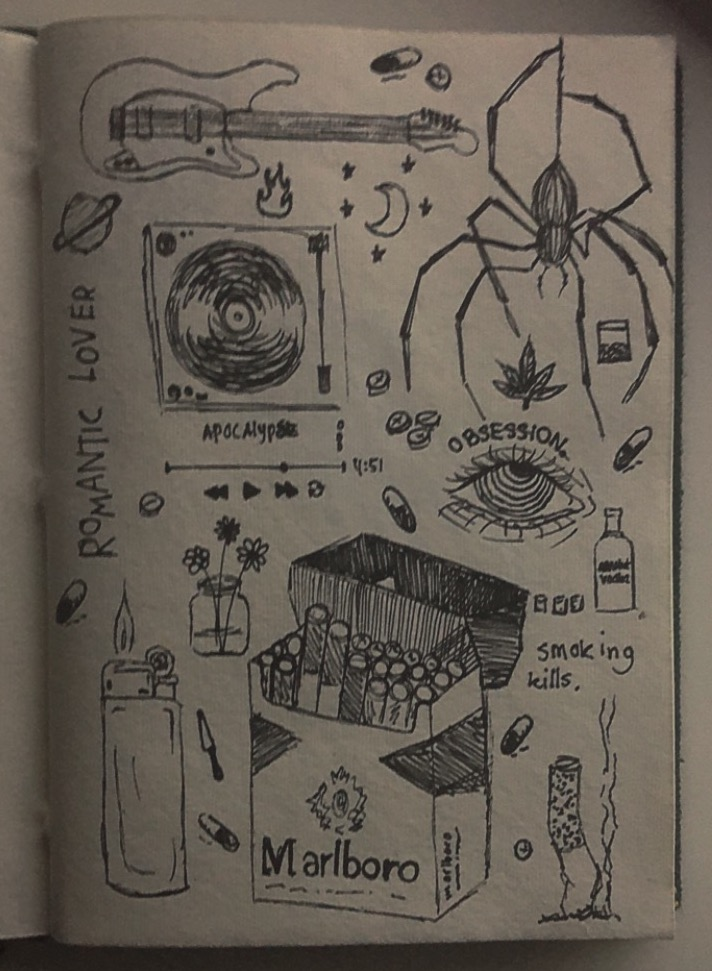
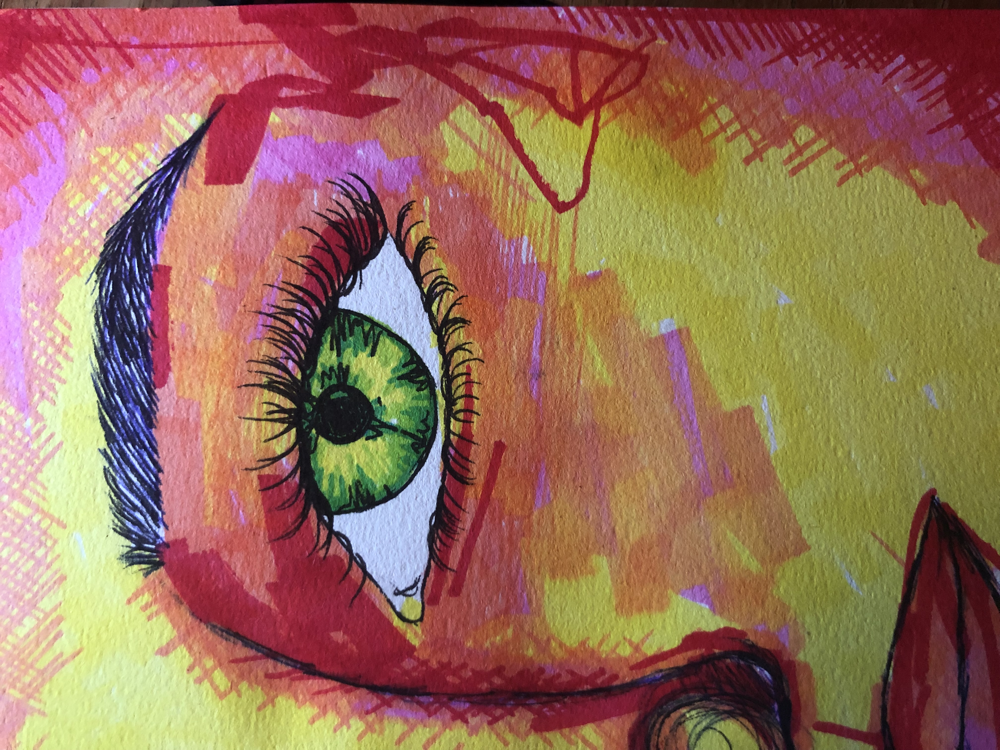
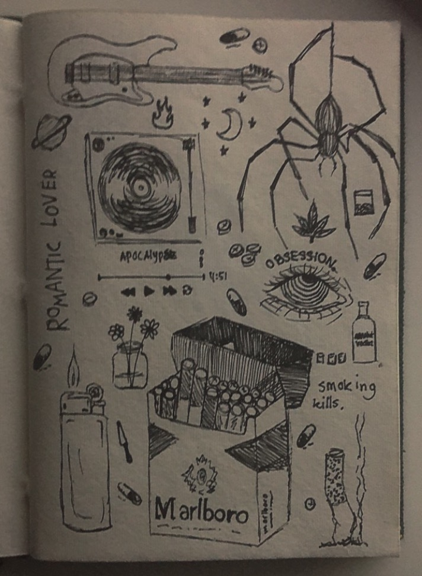
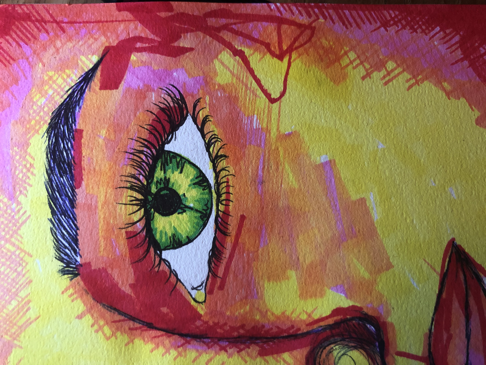
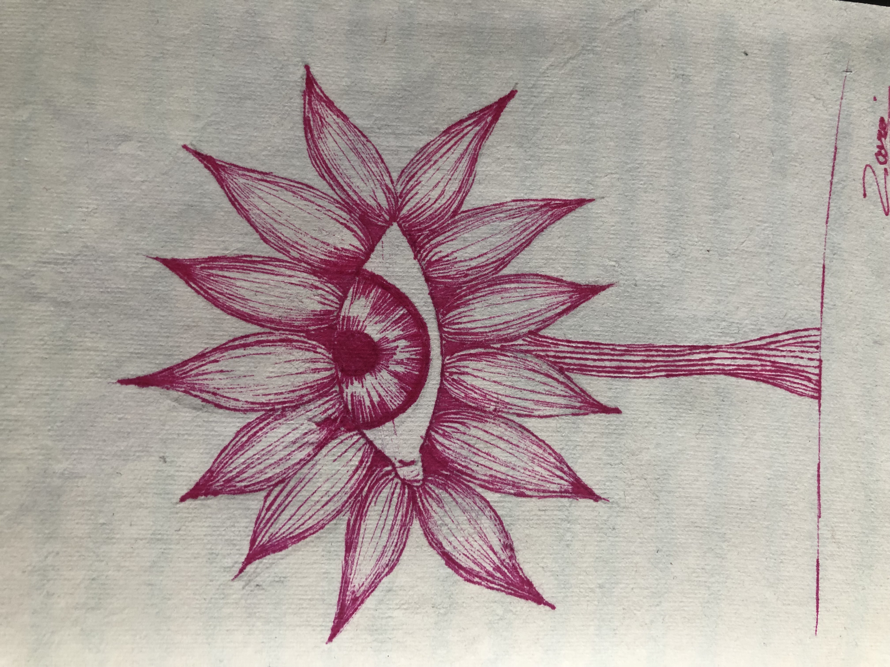
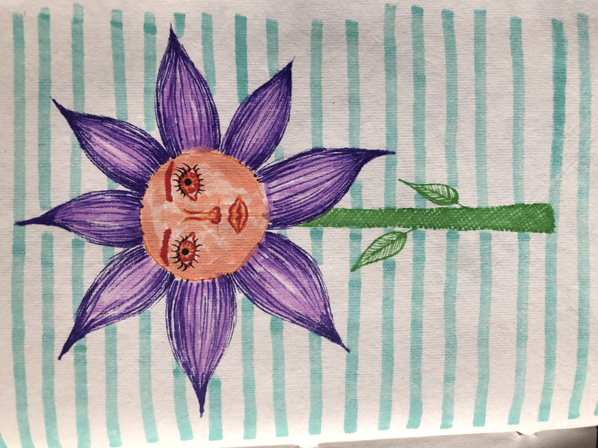
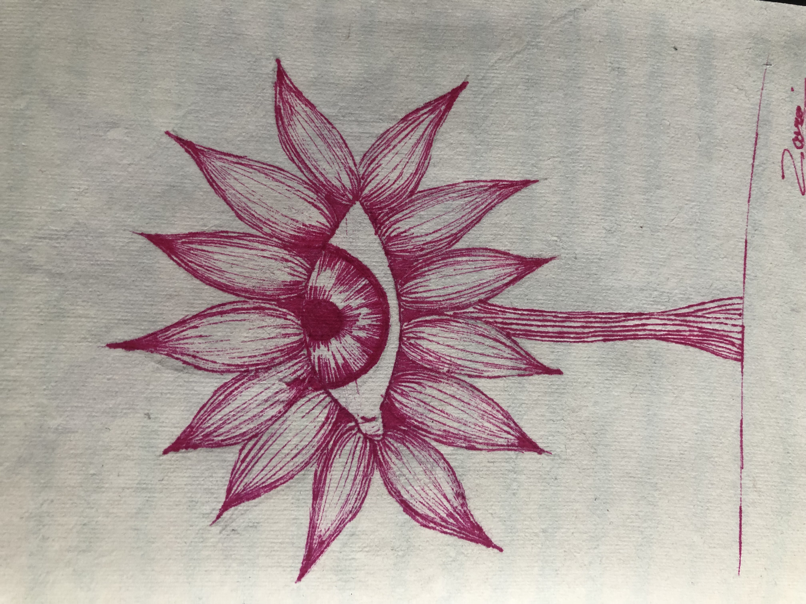
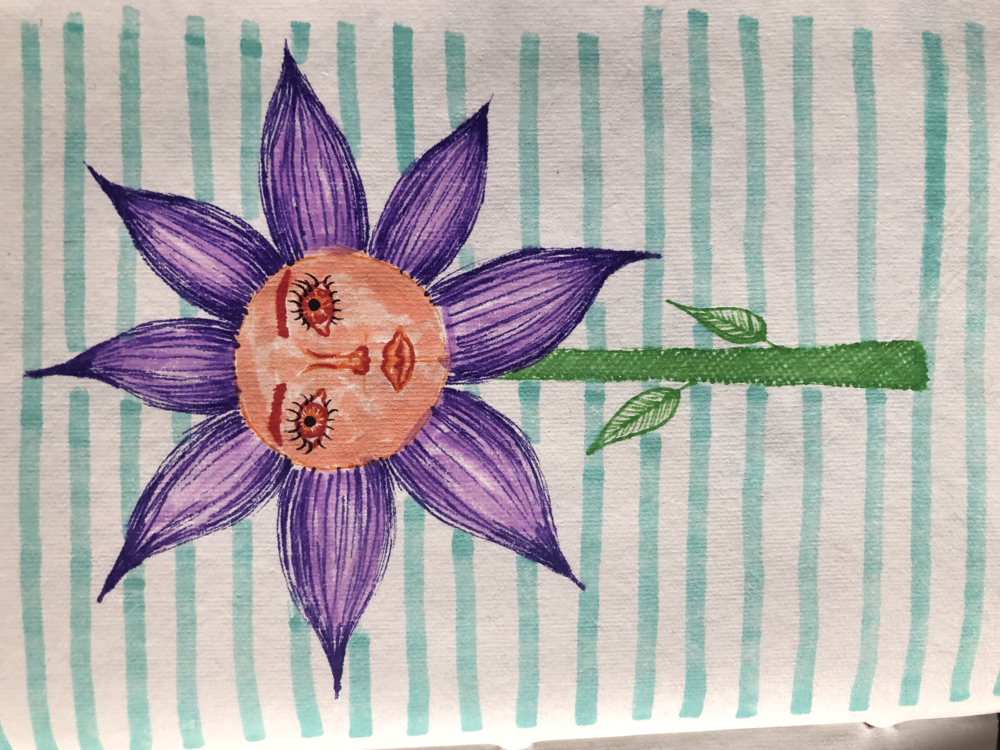

Drawings
My main focus right now is marker and fineliner art. I really enjoy making this type of art because it is easy and quick to make. I can quickly make a sketch or drawing in my drawing book with some markers and fineliners, which ultimately looks good. You can really see my art style coming through, because I like to draw plants or other objects with faces. I mainly use bright colors for these types of drawings, but occasionally I only use a black fineliner. I mainly get my inspiration from Pinterest, but also other things in my environment. Below you can see some drawings I made.
 



Art supplies I use for making my drawings
For my colored drawings I mainly use the fineliners and markers from Stabilo, because they are nice to draw with and they usually don’t bleed through. The colors are also very vibrant, which I like. I also sometimes use the promarkers from Winsor & Newton. I use these less often because they bleed through, but they are nice to work with and very pigmented. If I want to make a work with only black fineliner, I use Staedtler or the Sakura Pigma Micron fineliners. I enjoy working with these fineliners and markers the most.
 


